چرا به این جهان آمده ایم؟
اگر کتابی زندگانی شما را دگرگون سازد، حاضرید آنرا بخوانید؟ اگر کتابی به شادی شما و عشق شما به زندگی صد چندان بیفزاید، آیا حاضرید آنرا بخوانید؟ خبر خوش: چنین کتابی نگاشته شده و اکنون در دسترس شماست.
چه فایده اگر صد سال زندگی کنیم اما ندانیم مقصود از زندگی چیست؟ چرا به این جهان آمده ایم؟ کتابی است تازه که در پاسخ به این پرسش نگاشته شده. این کتاب را بخوانید تا به عیان به بینید که تا چه حد به زندگانی شما شادی و صفا می بخشد.
|
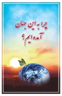
|
آئین بهائی
آئین بهائی: پیام آسمانی برای صلح و سعادت جهانی کتابی است نسبتاً مفصل درباره تعالیم و تاریخ امر بهائی که به زبانی ساده و سلیس نگارش یافته. این کتاب همچنین شامل نمونه هائی از آثار آسمانی بهائی به زبان فارسی و عربی است.
واقعاً جای چنین تألیفی سال هاست که خالی بود. نثر ساده و روان و شیرینی که اختیار نموده اید، نمونه هائی که از آثار آسمانی بهائی فراهم آورده اید، و نظم نوینی که در ساختار کتاب بکار بسته اید، همه شاهدی بارز از قدرت قلم و وسعت معلومات و حسن انتخاب و همّت والای آن برادر نیک اختر است. — دکتر ایرج ایمن
|
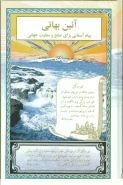
|
بهاءالله در قرآن
قرآن مجید در صدها آیه به ظهور دو پیامبر از ایران خبر داده است. بهاءالله در قرآن ارائه و توضیح این آیه هاست. این کتاب به اثبات می رساند که بر خلاف تصور بسیاری از مسلمانان، رابطه یزدان با بندگانش هرگز قطع نشده و نخواهد شد. این نخستین استدلالیه ای است
که بر آیه های قرآن، و نه بر احادیث، قرار گرفته. بهاءالله در قرآن را بخوانید و به بینید که پیش بینی های قرآن چگونه با ظهور آئین بهائی یک یک تحقق یافته و چه پیش بینی های دیگری آن کتاب برای آیندۀ جهان دارد.
|
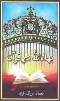
|
بهاءالله في القران
ان موضوع هذا الكتاب عبارة عن شرح وحل "للغز كبير في القرآن" الذي انكشفت أسراره لأول مرة مع ظهور الدين البهائي.
|
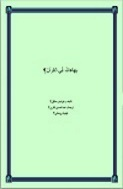
|
قرآن ﺍﻭﺑﻬﺎءﺍﻟﻠﻪ
بهاءالله در قرآن به زبان پشتو
|
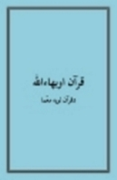
|
بهاءالله، فروغ و فرّ یزدان
بزرگترین خبر در تاریخ بشر، ظهور آئینی است به نام بهائی که خداوند برای شادمانی و کامرانی ما و صلح و یگانگی میان مردم جهان فرستاده است. هر یک از ما در برابر خدا مسئولیم که این آئین را بشناسیم و به این پرسش پاسخ دهیم: "آیا آئین بهائی از جانب خداست یا از جانب یک انسان فریبکار؟" این کتاب به شما یاری می دهد که با کمال اطمینان به این پرسش پاسخ دهید. سرنوشت جاودانی شما بسته به شناسائی آخرین فرستاده خداست. این سرنوشت را کوچک نشمرید.
|
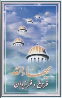
|
محمد: خاتم انبیاء
این کتاب اصولاً برای مسلمانان نوشته شده و راجع به موضوعی است که بالاترین اهمیّت را برای آنان دارد. اگر شما مسلمان هستید و به "اصل خاتمیّت" معتقّدید، از خواندن این کتاب بینش بسیاری کسب میکنید. برای آنکه این شاید بنیادی ترین و عمیق ترین اصلی است که همۀ مسلمانان به آن معتقدند یعنی: رسول اکرم آخرین پیامبر خدا است.
این کتاب بسیاری از آیات قرآن را که ممکن است قبلاً متوّجه آنها نشده باشید روشن میسازد—آیاتی که در نظر اول ممکن است برای اکثر مؤمنین ناخوش آیند و حتّی رنج آور باشد، زیرا عزیزترین و مهم ترین اعتقاد مسلمانان یعنی این باور که بعد از اسلام دین دیگری نخواهد آمد را به چالش میکشد.
|
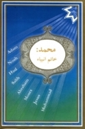
|
محمد: خاتم النبیین
لقد كُتب هذا الكتاب في المقام الأول للمسلمين ويُرَكّزُ الاهتمامَ على موضوع له أهمية خاصة وعظيمة لهم، ولكن قد يكون الموضوع لا يحمل الأهمية ذاتها لأتباع الأديان الأخرى. فلو كنتَ مسلماً وتعتقد اعتقادًا وثيقاً "بعقيدة خاتم النبيين" سوف تجني الكثير من قراءة هذا الكتاب حيث الاعتقاد بأن محمد صلى الله عليه وسلم هو خاتم الرسل لهو من العقائد الأكثر أهمية لدى معظم المسلمين.
يكشف هذا الكتاب عن آيات قرآنية عديدة ربّما لم تلاحظها من قبل، فالآيات تبدو للوهلة الأولى غير مستحبة بل ومؤلمة لأكثر المؤمنين لأنها تتحدى أهم عقيدة أو مبدأ فيما بين المسلمين وهي أنه لم ولن يكون بعد الإسلام دين آخر.
|
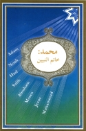
|
زندگی با خدا و بی خدا
این نوشته راهنمای روح انسان به یافتن و شناختن برترین بخشش ها و الطاف یزدان به بندگان است.
چه ارمغانی برتر ازآزادی و آگاهی و امید و عشق می توان یافت؟ آزادی از هوس های نفس نزدیک نگر،
آگاهی از نقش انسان در این عالم فانی، امید به بقای روح در جهان جاودانی، و عشق به خود و خدا و
بندگان خدا. هدف از هستی ما، بهر بردن از همه این نعمت هاست. اگر به آنها نرسیم، قصور از کیست؟
|
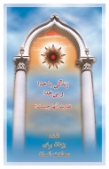
|
تاریخی مختصر از آئین بهائی
تاریخی مختصر از دو پیامبر عصر ما، حضرت باب و حضرت بهاءالله.
|
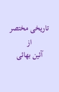
|
آیا اسلام آخرین دین است؟
بر طبق قرآن سنت خداوند تغییرپذیر نیست و فرستادن پیامبران یکی از این سنت های یزدان مهربان است. بنابر این آیا هیچیک از ادیان می تواند آخرین دین به شمار آید؟
|
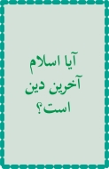
|
داستان تولد و غیبت مهدی موعود
این نوشته دادگاهی است که در آن مدعیان تولد و غیبت مهدی موعود محاکمه می شوند.
|
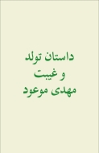
|
خبر خوش
بسیاری از مردمان از مرگ بیم دارند و از نزدیک شدن به آن نگرانند،
زیرا بر این تصوّرند که مردن گامی به سوی نیستی است. بنابر پژوهش گروهی
از دانشمندان، مرگ پایان زندگی نیست، بلکه گامی است به سوی عالمی دیگرآکنده
از زیبائی ها و شگفتی ها. امیدوارم این نوشته به تمام کسانی که به مراحل آخرزندگی
رسیده اند یا عزیزی از دست داده اند آرامش بخشد و آنها را یادآور شود که مرگ فصلی
است تازه در زندگانی انسان، سفری است جانبخش به جهانی پر از زیبائی ها و شگفتی ها.
|
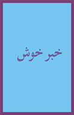
|
تقلید
این نوشته نشان می دهد که تقلید از عقاید آباء و اجداد که متداول ترین روش پذیرش آئین هاست، چه پیامدهای مخرّبی در سرنوشت بشر داشته و دارد.
|
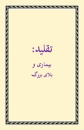
|
دروغ
این نوشته مختصر نشان می دهد که دروغ سرمنشأ بدی ها و صداقت سرمنشأ نیکی هاست.
|
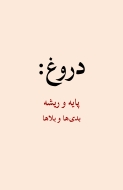
|
کتابی گویا همراه با تصاویر زیبا
آئین بهائی، پیام آسمانی برای صلح و سعادت جهانی در 12 ویدیو با صدای زیبای خانم شکوه رضائی.
شنیدن این کتاب گویا و این صدا و آهنگ جان افزا همراه با تصاویر و عکس های زیبا، شما را از رویدادهای ناروای این دنیا می رهانند و به روح شما شادی و آرامش می بخشند.
|
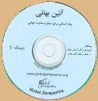
|